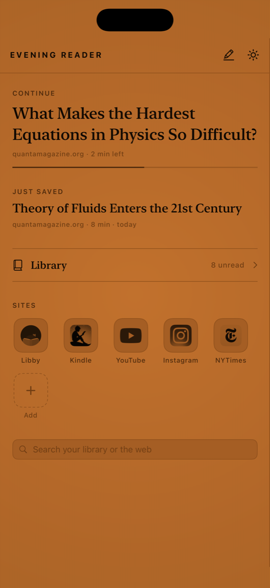
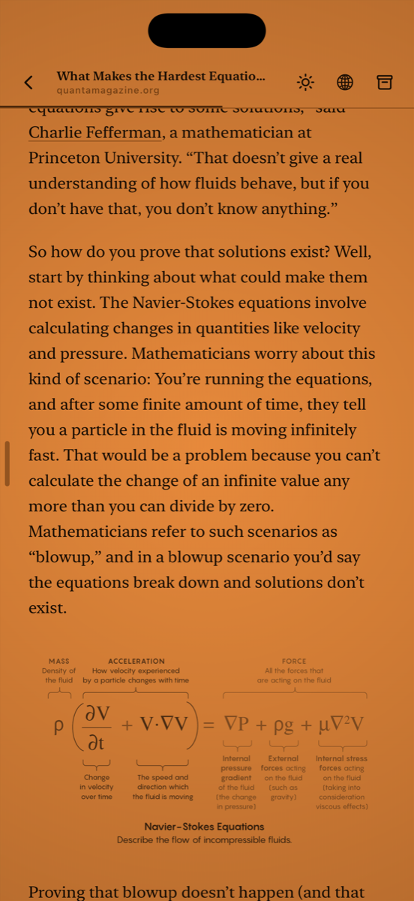
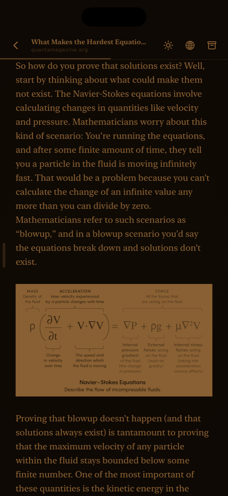
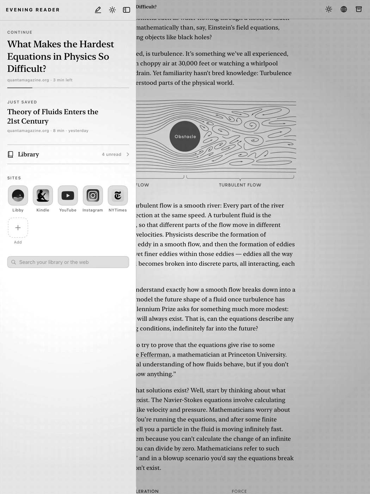

Soft on the eyes, warmth for the soul.
A reading app drawn in one color. Save articles, books and PDFs, and read them on a single amber glow you set yourself — turned up toward orange, down toward beige, dimmed for a dark room, or flipped to night. Everything you save is kept on the device and in your own iCloud folders.
Download on the App Store iPhone and iPad · iOS 17 or later



Share a page from Safari or any app, paste a link, or open a book. Articles are stripped to their text and pictures and set in the reader's type. PDFs keep their pages. EPUB books arrive with their cover, chapters and contents.
Everything you save is downloaded and kept — the text, the pictures, the whole book. What you saved on the train is there on the plane.
One folder per article, holding the text, the pictures and a Markdown copy, synced through your own iCloud Drive and readable in Files or on a Mac. Nothing you save is locked inside the app.
Select a passage to highlight it, write a note, look up a word, or ask about it on-device with Apple Intelligence. Every highlight in the library is gathered on one page; tap one and you're back at the passage.
Warmth, brightness and contrast on three sliders; paper or night; the type's face, size, leading and measure. Save the settings you like and switch between them in a tap.
A built-in browser draws any site on the same panel — your library's catalogue, a bookshop, a paper, a video — with a tile for each of the places you go on purpose.

Built for the last hour of the day.